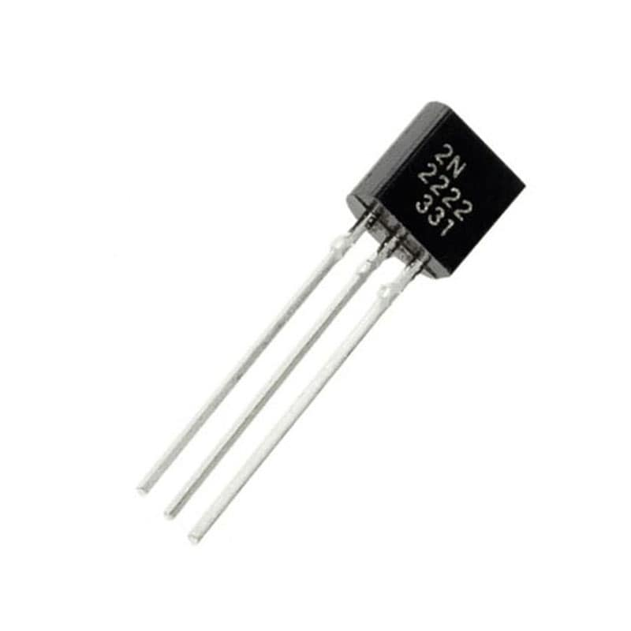
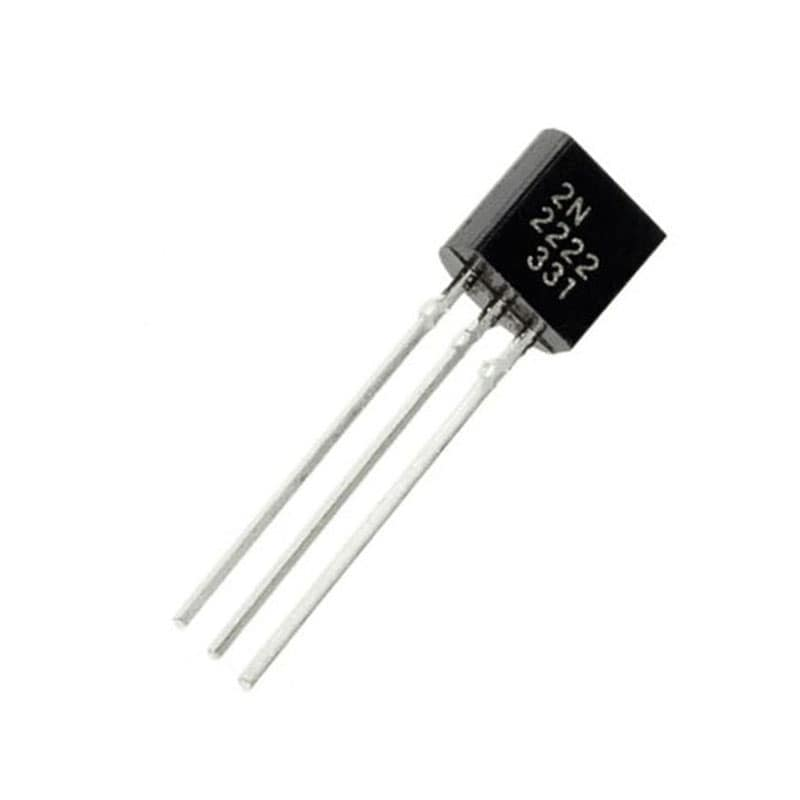

Tipos de transistores
Los tres tipos de transistores más comunes son los transistores bipolares de unión (BJT), los transistores de efecto de campo de compuerta aislada (MOSFET) y los transistores de efecto de campo de unión (JFET). A continuación se describen brevemente sus características:
Transistor Bipolar (BJT):
 


Caracteristicas del transistor BJT
- Puede ser operado en modo de amplificador o interruptor.
- La polarización de la base controla la corriente del colector.
- El BJT puede ser NPN o PNP.
- Su ganancia de corriente (hFE) es alta.
- La velocidad de conmutación es menor en comparación con otros tipos de transistores.
Transistor de Efecto de Campo de Unión (JFET):


Caracteristicas del transistor JFET
- Puede ser operado en modo de amplificador o interruptor.
- La polarización de la puerta controla la corriente del drenador.
- El JFET puede ser de tipo N o P..
- Su ganancia de corriente es baja, pero la ganancia de voltaje es alta..
- La velocidad de conmutación es menor en comparación con los MOSFET.
Transistor de Efecto de Campo de Compuerta Aislada (MOSFET):
Caracteristicas del transistor MOSFET
- Puede ser operado en modo de amplificador o interruptor.
- La polarización de la compuerta controla la corriente del drenador.
- El MOSFET puede ser de tipo N o P.
- Su ganancia de corriente es baja, pero la ganancia de voltaje es alta.
- La velocidad de conmutación es alta en comparación con los BJT.